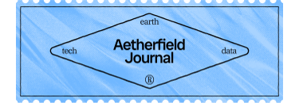

How to Build a Climate-Ready Data Stack
Insights · 4 min
A practical guide for sustainability teams on integrating emissions, waste, and energy data into modern workflows.

Insights · 4 min
A practical guide for sustainability teams on integrating emissions, waste, and energy data into modern workflows.

Strategy · 7 min
Why climate goals belong in your core roadmap—not just in the annual ESG report.

Insights · 5 min
A behind-the-scenes look at our platform logic, system architecture, and sustainability reasoning.

Tooling · 6 min
Why legacy tools aren’t enough—and what the next generation of reporting looks like.

Tooling · 6 min
Debunking common assumptions and offering a framework for getting it right.

Strategy · 4 min
Building responsive systems that keep sustainability strategy adaptive and actionable.